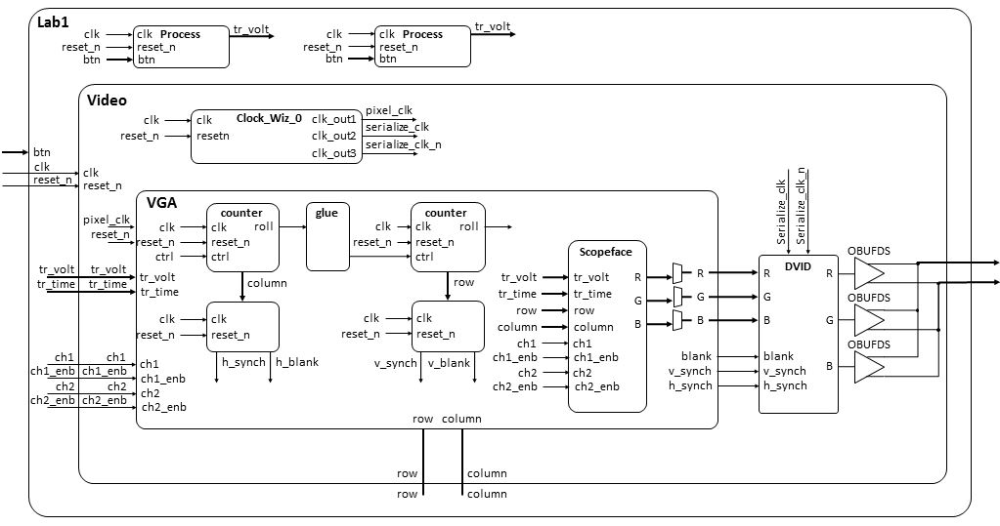
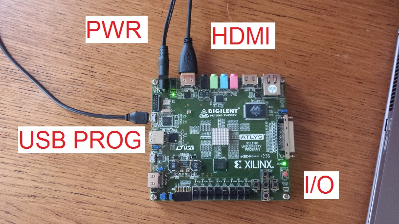

| Start date: | January 22 |
| End date: | January 28 |
| Lab: | 1 |
| Status | In Progress |
| Lab 1 Cutsheet | ECE_383_Lab1_Cutsheet.pdf |
Lab 1 - Video Synchronization
Lab Overview
In this lab, you will write a VGA controller in VHDL and implement it on your FPGA development board. You will be provided a VGA-to-HDMI module that will automatically format your output for the HDMI output port on your development board. This VGA controller will be tasked to generate the display portion of an oscilloscope as shown in the figure below. The scope face consists of a white grid, used to measure the signals, two trigger markers, and the waveforms. In this lab the waveforms will be artificially generated by your code, but in later labs, the waveforms will be generated by incoming audio waveforms.
VGA Overview
Video Graphics Array (VGA) is an interface protocol used to transmit analog video data to a screen. The VGA protocol uses a scanning method to project an image on the screen. Starting in the top-left of the screen, the monitor will progressively move from left to right, top to bottom to display each pixel. The following signals must be sent to a VGA monitor in order to display an image.red,green,blue- three separate analog voltage signals indicating the amount of each color to display in the current pixel. These signals are sometimes abbreviated as RGB.h_sync- Horizontal synchronization signal that tells the screen to start writing pixels to the next linev_sync- Vertical synchronization signal that tells the screen that the current video frame is completed. The screen then starts writing pixels to the top-left of the screen.
active_video, front_porch,
sync_pulse, and back_porch. Incoming pixel
data (through the RGB channels) is only displayed during the active_video
state of the synchronization signals.Internally, you will use a 25MHz clock as your
pixel_clk.
On the rising edge of this clock, when both the h_sync and
v_sync signals are in the active_video state, you will place
the RGB values you want the screen to display for that pixel. During all
other states, the RGB values must be "0".

Figure 1: The
h_sync signal contains four
states. Pixel data is only displayed on the monitor during the
active_video state. During all other state, the RGB values must be
"0".The
v_sync signal looks nearly identical to the
h_sync signal, however it is significantly stretched out
in time. Where the h_sync signal was counted in terms of
pixel_clk, the v_sync signal is counted based
on iterations of the h_sync signal. For example, in
Figure 2, the active_video portion is active for 480
complete iterations of the h_sync signal.
Figure 2: The
v_sync signal is similar
to h_sync, but instead of counting based on
pixel_clk, the states are based on the number of iterations
of the h_sync signal. Pixel data is only displayed on the
monitor during the active_video state. During all other state, the RGB
values must be "0".More details on the VGA protocol can be found at http://www-mtl.mit.edu/Courses/6.111/labkit/vga.shtml. This link provides the exact numbers needed to generate the correct timing pulse signals for any VGA resolution.
VHDL Code
In order to get you going in this lab, some of the VHDL code has been provided for you. In most cases, you should refrain from changing the modules given. In order to get a better understanding how these modules interact with one another, the following section provides a schematic and the input, output and behavior of some of the modules.Architecture
The design of Lab 1 is broken down into separate modules, some of which are provided for you and some which you will need to create. The interconnection of the modules is illustrated in the following schematic. When a signal name appears just inside a box, that should should correspond to the name of that signal in the entity description. Please note there are a few omissions in the diagram that you should correct as part of your documentation (see Turn-In section).
There are two modules which will constitute the majority of your work, VGA and scopeFace. The following two subsections details the behavior of these two modules.
The VGA module
Your main task is to build the VGA component for Lab1. This component sweeps across the display from left to right, and then return to the left side of the next lower row. The VGA interface determines the color of each pixel on this journey with the help of the scopeFace component.entity vga is Port( clk: in STD_LOGIC; reset : in STD_LOGIC; h_sync : out STD_LOGIC; v_sync : out STD_LOGIC; blank : out STD_LOGIC; r: out STD_LOGIC_VECTOR(7 downto 0); g: out STD_LOGIC_VECTOR(7 downto 0); b: out STD_LOGIC_VECTOR(7 downto 0); trigger_time: in unsigned(9 downto 0); trigger_volt: in unsigned (9 downto 0); row: out unsigned(9 downto 0); column: out unsigned(9 downto 0); ch1: in std_logic; ch1_enb: in std_logic; ch2: in std_logic; ch2_enb: in std_logic); end vga;
| clk | This is the 25Mhz pixel clock generated by the DCM in the video module. |
| reset | This is the same active low reset signal passed into the top level Lab1 module. |
| tr_volt | This is a 10-bit unsigned value representing the trigger voltage. This value is passed to the scopeFace module so that a yellow arrow (see Trigger Level Marker in the screen show) on the vertical axis. |
| tr_time | This is a 10-bit unsigned value representing the trigger time. This value is passed to the scopeFace module so that a yellow arrow (see Trigger Time Marker in the screen show) on the horizontal axis. |
| ch1 | This 1-bit signal signals the VGA module to draw the channel 1 signal on the scope for this row, column pixel. When the value is 1, draw a yellow pixel on the display at the current row,colum position. When 0, do not draw a pixel. |
| ch1_enb | This 1-bit signal enable the ch1 signal to be drawn. |
| ch2 | This 1-bit signal signals the VGA module to draw the channel 2 signal on the scope for this row,column pixel. When the value is 1, draw a green pixel on the display at the current row, column position. When 0, do not draw a pixel. |
| ch2_enb | This 1-bit signal enable the ch2 signal to be drawn. |
| R | The 8-bit red intensity for this row,column pixel on the screen. |
| G | The 8-bit green intensity for this row,column pixel on the screen. |
| B | The 8-bit blue intensity for this row,column pixel on the screen. |
| Row | The current row being drawn on the display. |
| Column | The current row being drawn on the display. |
| blank | The blank signal for the current row,column position. Its the logical and of the h_blank and v_blank signals. |
| h_synch | The h_synch signal for the current row,column position. |
| v_synch | The v_synch signal for the current row,column position. |
| Behavior | The VGA component contains a pair of cascaded counters which generate the row and column values of the current pixel being displayed. The row and column values are used to generate the blank, h_synch and v_synch signals according to the Figures above. The scopeFace component (more on this below), takes the row and column values (along with some other information) and generates the R,G,B color of that pixel. The three muxes on the output of the R,G,B output of the scopeFace component output the scopeFace R,G,B values for row,column values within the 640x480 displayable region, or 0's for values outside this region. |
The scopeFace module
Inside the VGA module sits an instance of the scopeFace entity. This entity only contains combinational logic. When given a row,column pair, its responsible for generating the R,G,B value of that pixel.
entity scopeFace is
Port ( row : in unsigned(9 downto 0);
column : in unsigned(9 downto 0);
trigger_volt: in unsigned (9 downto 0);
trigger_time: in unsigned (9 downto 0);
r : out std_logic_vector(7 downto 0);
g : out std_logic_vector(7 downto 0);
b : out std_logic_vector(7 downto 0);
ch1: in std_logic;
ch1_enb: in std_logic;
ch2: in std_logic;
ch2_enb: in std_logic);
end scopeFace;
| clk | This is the 25Mhz pixel clock generated by the DCM in the video module. |
| reset | This is the same active low reset signal passed into the top level Lab1 module. |
| tr_volt | This is a 10-bit unsigned value representing the trigger voltage. This value is passed to the scopeFace module so that a yellow arrow (see Trigger Level Marker in the screen show) on the vertical axis. |
| tr_time | This is a 10-bit unsigned value representing the trigger time. This value is passed to the scopeFace module so that a yellow arrow (see Trigger Time Marker in the screen show) on the horizontal axis. |
| ch1 | This 1-bit signal signals the VGA module to draw the channel 1 signal on the scope for this row, column pixel. When the value is 1, draw a yellow pixel on the display at the current row,column position. When 0, do not draw a pixel. |
| ch1_enb | This 1-bit signal enable the ch1 signal to be drawn. |
| ch2 | This 1-bit signal signals the VGA module to draw the channel 2 signal on the scope for this row,column pixel. When the value is 1, draw a green pixel on the display at the current row, column position. When 0, do not draw a pixel. |
| ch2_enb | This 1-bit signal enable the ch2 signal to be drawn. |
| R | The 8-bit red intensity for this row,column pixel on the screen. |
| G | The 8-bit green intensity for this row,column pixel on the screen. |
| B | The 8-bit blue intensity for this row,column pixel on the screen. |
| Row | The current row being drawn on the display. |
| Column | The current row being drawn on the display. |
| Behavior | The scopeFace component takes in the current row,column coordinates of the display and generates the R,G,B values at that screen coordinate. For example, if row,column = 20,20 then the R,G,B output should be 0xFF,0xFF,0xFF (white) because the upper left corner of the O'scope grid display is white. Note, you can get the RGB values for common colors at this web site. |
Required Functionality
Your code must generate the white oscilloscope grid pattern shown in the Figure above and draw the two channels of traces. To test this draw: the channel 1 trace (yellow) along a diagonal where (row = column). The channel 2 trace (green) should be drawn along a diagonal where (row = 440-column). This test code should be placed in the Lab1 entity.A-level functionality
A-level functionality is shown in the Figure in the Lab Overview section at the top of the page. In addition to drawing the display, the display must update when one of the buttons is pressed according to the list below.- Pressing the upper directional button (BTNU) once should move the Trigger Level Marker up.
- Pressing the lower directional button (BTND) once should move the Trigger Level Marker down.
- Pressing the left directional button (BTNL) once should move the Trigger Time Marker left.
- Pressing the right directional button (BTNL) once should move the Trigger Time Marker right.
You need to draw the channel 1 trace (yellow) along a diagonal where (row = column). The channel 2 trace (green) should be drawn along a diagonal where (row = 400-column). This test code should be placed in the Lab1 entity.
Turn In
All your work in this lab is to be submitted using Bitbucket. The main part of the lab is your README, documenting your design. Your README must include the following:- Introduction - Provide a brief overview of the problem.
- Implementation - Provide block-diagram of your solution using the signal names in your code. The block diagram given above is somewhat incomplete, make sure to include corrections to this diagram. For each module that you built, explain its overall purpose, inputs, outputs, and behavior. Include all your vhdl files (code and testbench), wcfg file, and bit files. Put these in a folder called "code".
- Test/Debug - Briefly describe the methods used
to verify system functionality. Show at least three excerpts from your
testbench for the VGA module (as screen shots):
- Show the h_synch going high, low, high, and related h count.
- Show the h count rolling over causing the v count to increment
- Show the v_synch going high, low, high, and related v count.
- Conclusion - Explain what your learned from this lab and what changes you would recommend in future years to this lab or the lectures leading up to this lab.
Grading - Lab 1
| Item | Grade | Points | Out of | Date | Due |
|---|---|---|---|---|---|
| Required Functionality | On-Time ------------------------------------------------------------------ Late: 1Day ---- 2Days ---- 3Days ---- 4+Days | 45 | COB L8 | ||
| A Functionality | On-Time ------------------------------------------------------------------ Late: 1Day ---- 2Days ---- 3Days ---- 4+Days | 15 | COB L8 | ||
| Use of Git / Bitbucket | On-Time: 0 ---- Check Minus ---- Check ---- Check Plus ---- Late: 1Day ---- 2Days ---- 3Days ---- 4+Days | 5 | COB L9 | ||
| Code Style | On-Time: 0 ---- Check Minus ---- Check ---- Check Plus ---- Late: 1Day ---- 2Days ---- 3Days ---- 4+Days | 10 | COB L9 | ||
| README | On-Time: 0 ---- Check Minus ---- Check ---- Check Plus ---- Late: 1Day ---- 2Days ---- 3Days ---- 4+Days | 25 | COB L9 | ||
| Total | 100 |
Connecting
Your Digilent board will have a lot of connections required to make this lab work. The image below shows how I made these connections to get the lab to work.